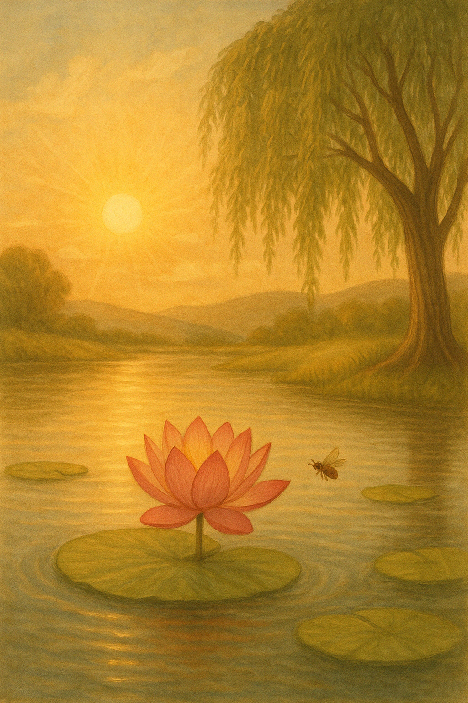

Home
Rituelen en Levensstijl
Muziek
Beweging en Gezondheid
In de Keuken
Kinderen en innerlijk kind
Op reis
Samenleven met de Aarde
Over mij
Contact
Wensput

Dankjewel voor je bericht!
Je woorden zijn ontvangen in liefde en licht.
Terug naar Home